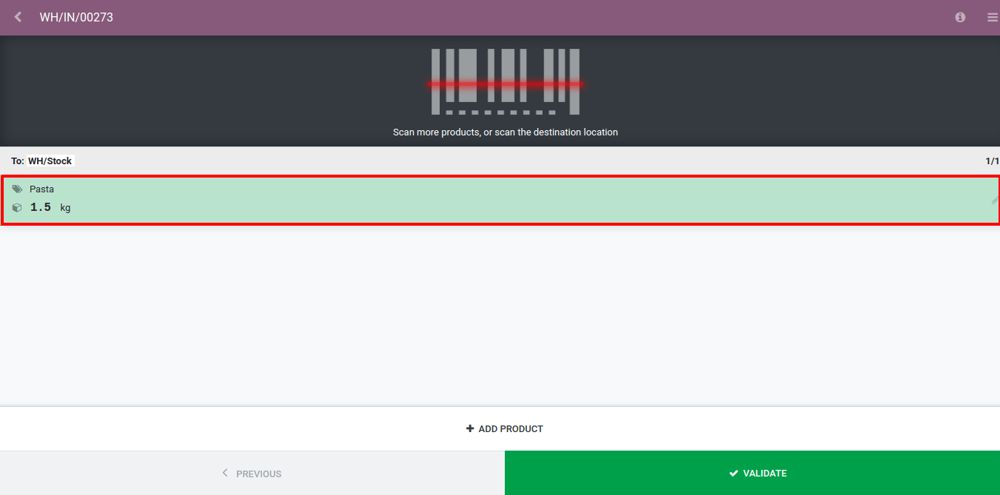

Overview¶
There are different situations in which barcode nomenclatures can be useful. A well-known use case is the one of a point of sale which sells products in bulk, in which the customers will scale their products themselves and get the printed barcode to stick on the product. This barcode will contain the weight of the product and help compute the price accordingly.
Create a Barcode Nomenclature¶
Odoo supports Barcode Nomenclatures, which determine the mapping and interpretation of the encoded information. You can configure your barcode nomenclature being in developer mode. To do so, go to .
You can create a barcode nomenclature from there, and then add a line to create your first rule.

The first step is to specify the rule name, for example Weight Barcode with 3 Decimals. You then have to specify the type for barcode nomenclature, in our case it will be Weighted Product.

The Barcode Pattern is a regular expression that defines the structure of the barcode. In this example 21 defines the products on which the rule will be applied, those are the numbers by which the product barcode should start. The 5 “dots” are the following numbers of the product barcode and are there simply to identify the product in question. The “N” define a number and the “D” define the decimals.
The encoding allows to specify the barcode encoding on which the rule should be applied.
Note
You can define different rules and order their priority thanks to the sequence. The first rule which matches the scanned barcode will be applied.
Configure your Product¶
The barcode of the product should start by “21”;
The 5 “dots” are the other numbers of your product barcode, allowing to identify the product;
The barcode should contain 0’s where you did defined D’s or N’s. In our case we need to set 5 zeros because we configured “21…..{NNDDD}”;
In EAN-13, the last number is a check number, use an EAN13 generator to know which digit it should be in your case.

In case you weight 1,5 Kg of pasta, the balance will print you the following barcode 2112345015002. If you scan this barcode in your POS or when receiving products in your barcode application, Odoo will automatically create a new line for the Pasta product for a quantity of 1.5 Kg. For the point of sale, a price depending on the quantity will also be computed.
Rule Types¶
Priced Product: allows you to identify the product and specify its price, used in POS.
Discounted Product: allows you to create one barcode per applied discount. You can then scan your product in the POS and then scan the discount barcode, discount will be applied on the normal price of the product.
Weighted Product: allows you to identify the product and specify its weight, used in both POS (in which the price is computed based on the weight) and in inventory.
Client: allows you to identify the customer, for example used with loyalty program.
Cashier: allows you to identify the cashier when entering the POS.
Location: allows you to identify the location on a transfer when multi-location is activated.
Package: allows you to identify packages on a transfer when packages are activated.
Credit Card: doesn’t need manual modification, exists for data from the Mercury module.
Unit Product: allows you to identify a product for both POS and transfers.
Note
When the barcode pattern contains .*, it means that it can contain any number of characters, those characters being any number.